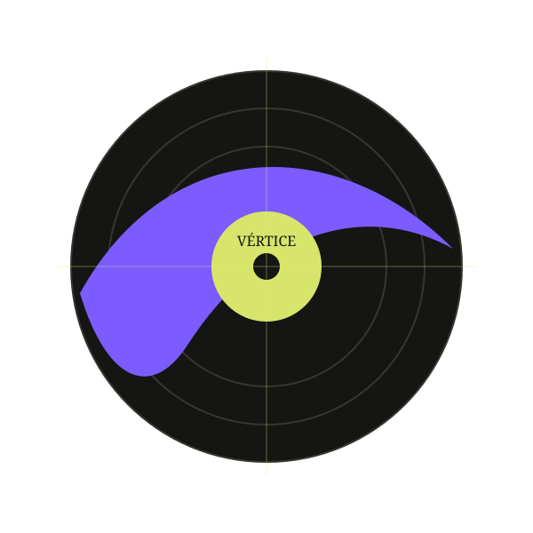

SEXTA · 21h
Lua Nova
Neo-soul e eletrônica orgânica.
Festival de música alternativa
Três noites de shows em dois palcos, só com artistas independentes.

Line-up 2026
Neo-soul e eletrônica orgânica.

Indie eletrônico com sintetizadores ao vivo.

Percussão brasileira e batidas eletrônicas.
“Som alto, pista cheia e artistas que você ainda vai ouvir muito.”
O festival acontece em um antigo armazém ferroviário da Barra Funda, a 12 minutos a pé da estação Palmeiras-Barra Funda.
Como chegar